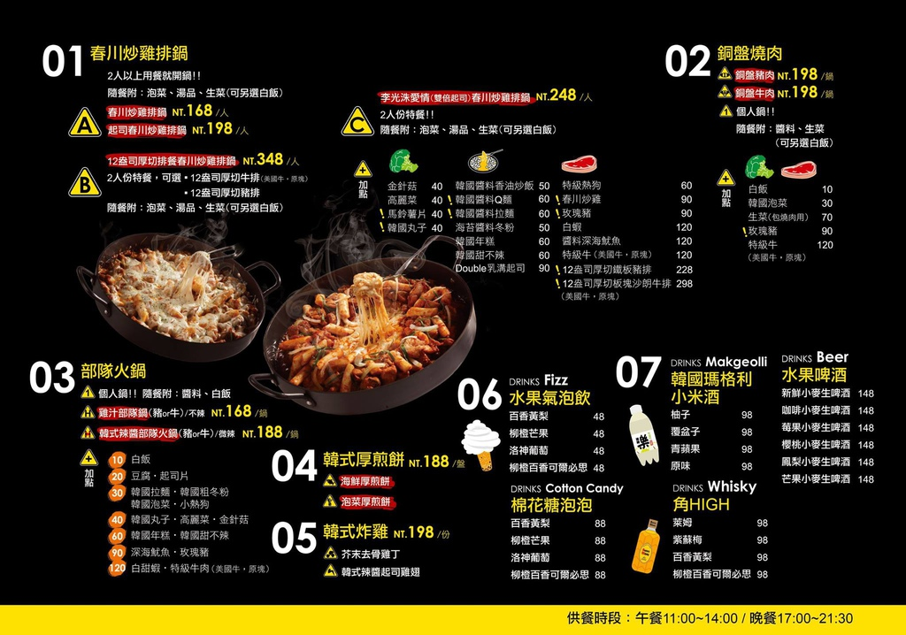
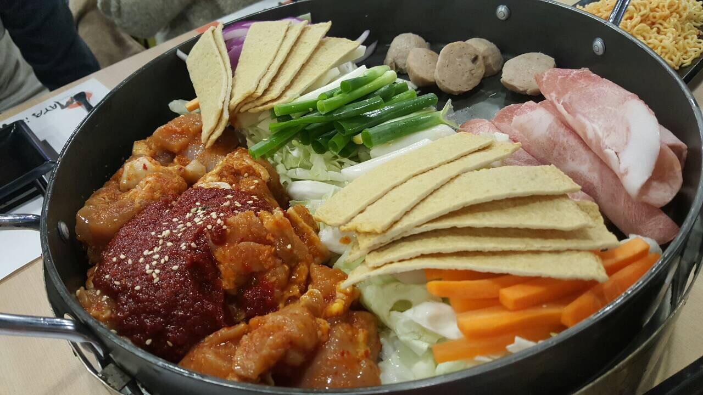
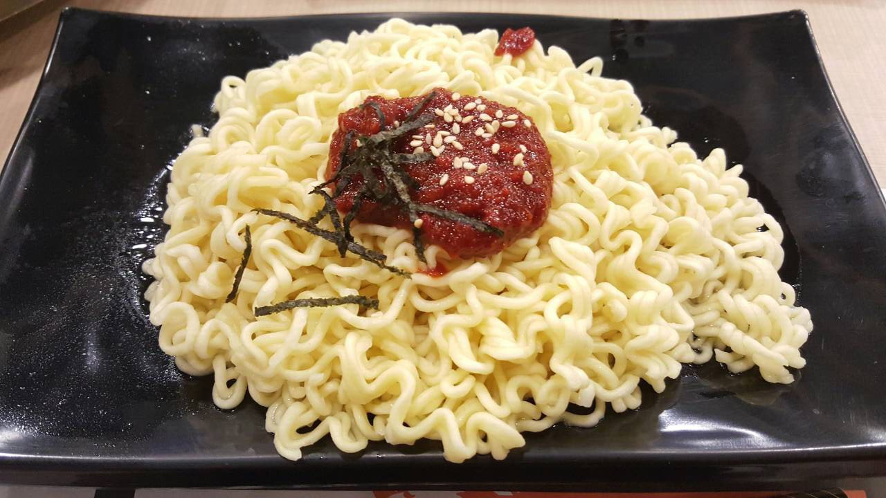
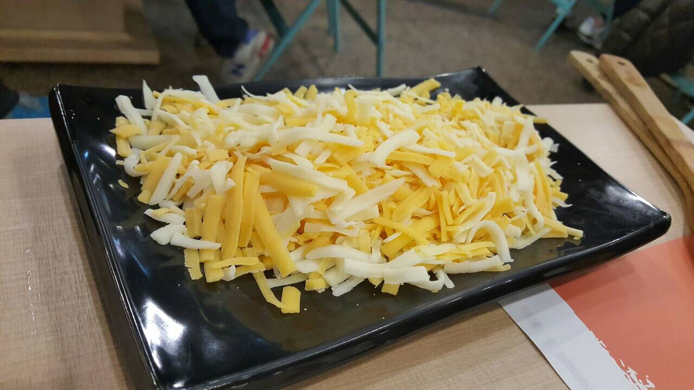
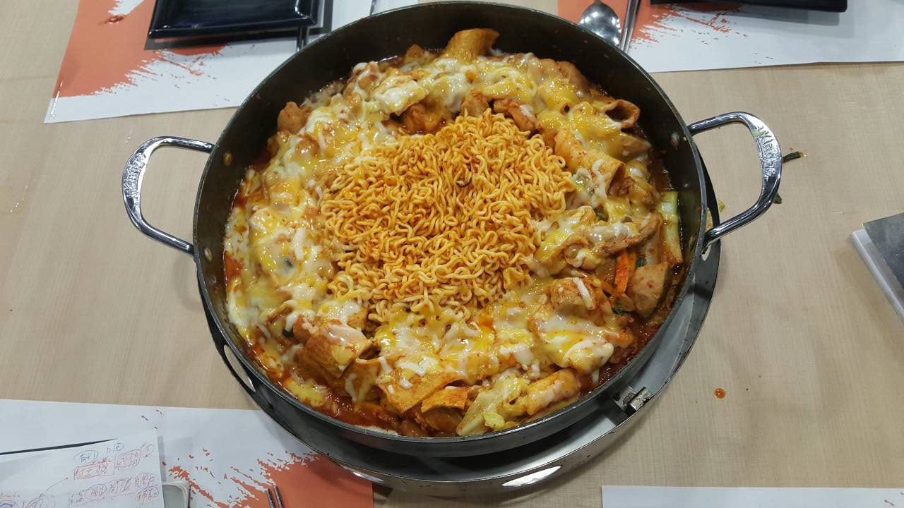
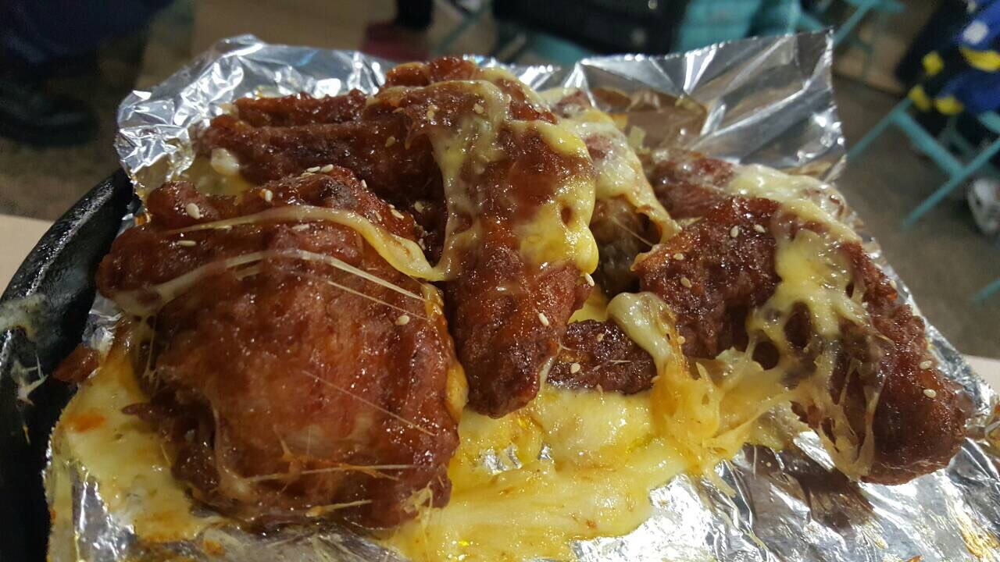

今天s跟著家人來吃飯，聽他們說這家可以相當有名的，怎麼說呢，有名到 假日是不接受預約，要現場排隊，還好我們有好心人士幫我們排隊，廢話就不多說了，還是快來看看這裡在賣什麼葫蘆，是不是真的這麼好吃啊！！
他們菜單主單【起司春川炒雞】、【部隊鍋】、【銅盤烤肉】、【韓式炸雞】
我們點了起司春川炒雞(一般）、再單點一些料和韓式炸雞、水果氣泡飲
 春川炒雞附有泡菜、蒜頭、湯品和生菜，我們另外點了拉麵和其他料
看到我們的鍋，開始慶幸沒點12盎的起司春川炒雞，不然真的很恐怖！！！
整盤的起司是等等服務生要幫我們加入鍋內烹煮的
呵呵！！等了10~15分鐘，終於可以開始用餐了，看到這融化的起司和滿滿的食物，讓人十指大開啊！要來大塊朵頤了~
我們另外加點的韓式炸雞也是非常好吃。
可惜，我們這次本來想嘗鮮，點個棉花糖泡泡飲料來喝看看，但店員說棉花糖缺貨中只能改選點別的了~~
總結
我會推薦這店，平價又好吃，而且愛吃起司的人會很喜歡
最重要的是 不收服務費
此店是連鎖店，所以有台北、桃園、新竹、台中、彰化、嘉義、屏東都有分店，想吃的食客不用太擔心了